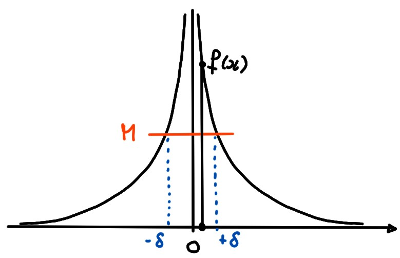
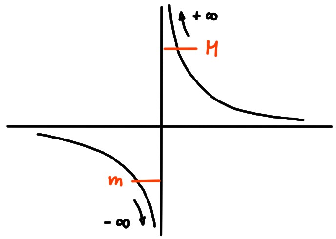

6.11 Limites infinies en un point
Ce qui peut se passer, lorsqu'aucune des limites \(\lim_{x\to x_0}f(x)\), \(\lim_{x\to x_0^-}f(x)\), \(\lim_{x\to x_0^+}f(x)\), n'existe, est que les valeurs de \(f(x)\) deviennent arbitrairement grandes à l'approche de \(x_0\), avec un signe bien défini. Listons les diverses possibilités:
Soit \(f\) définie dans un voisinage de \(x_0\).
Limite infinie lorsque \({x\to x_0}\):
Limite infinie lorsque \({x\to x_0}\):
- \(\displaystyle \lim_{x\to x_0}f(x)=+\infty\) si et seulement si pour tout \(M\gt 0\) il existe \(\delta\gt 0\) tel que \(f(x)\geqslant M\) dès que \(0\lt |x-x_0|\leqslant \delta\).
- \(\displaystyle \lim_{x\to x_0}f(x)=-\infty\) si et seulement si pour tout \(m\lt 0\) il existe \(\delta\gt 0\) tel que \(f(x)\leqslant m\) dès que \(0\lt |x-x_0|\leqslant \delta\)
- \(\displaystyle \lim_{x\to x_0^+}f(x)=+\infty\) si et seulement si pour tout \(M\gt 0\) il existe \(\delta\gt 0\) tel que \(f(x)\geqslant M\) dès que \(x_0\lt x\leqslant x_0+\delta\).
- \(\displaystyle \lim_{x\to x_0^+}f(x)=-\infty\) si et seulement si pour tout \(m\lt 0\) il existe \(\delta\gt 0\) tel que \(f(x)\leqslant m\) dès que \(x_0\lt x\leqslant x_0+\delta\).
- \(\displaystyle \lim_{x\to x_0^-}f(x)=+\infty\) si et seulement si pour tout \(M\gt 0\) il existe \(\delta\gt 0\) tel que \(f(x)\geqslant M\) dès que \(x_0-\delta\leqslant x\lt x_0\).
- \(\displaystyle \lim_{x\to x_0^-}f(x)=-\infty\) si et seulement si pour tout \(m\lt 0\) il existe \(\delta\gt 0\) tel que \(f(x)\leqslant m\) dès que \(x_0-\delta\leqslant x\lt x_0\).
Soit \(f(x)=\frac{1}{x^2}\), \(x\neq 0\). Montrons que
\[\lim_{x\to 0}f(x)=+\infty\,,\]
su sens de la définition ci-dessus.
n effet, fixons un seuil \(M\gt 0\), et montrons que \(f(x)\geqslant M\) pour tout
\(x\) suffisamment proche de \(0\).

Or on remarque que pour un \(M\gt 0\) fixé,
\[
f(x)\geqslant M\quad \Leftrightarrow \quad
\frac{1}{x^2}\geqslant M\quad \Leftrightarrow \quad
x^2\leqslant \frac{1}{M}\quad \Leftrightarrow \quad
|x|\leqslant \frac{1}{\sqrt{M}}\,.
\]
Définissons donc
\(\delta:= \frac{1}{\sqrt{M}}\). Comme conséquence de ce qui
précède, en prenant un \(x\) tel que
\(0\lt |x|\leqslant \delta\), on garantit que \(f(x)\geqslant M\).
\[
\lim_{x\to 0^+}\frac{1}{x}=+\infty\,,\qquad
\lim_{x\to 0^-}\frac{1}{x}=-\infty\,.
\]

\[\lim_{x\to 0^+}\ln(x)=-\infty\,.\]

Propriétés des limites infinies en un point
Comme on sait depuis le chapitre sur les suites,
les limites infinies ne se manipulent pas comme leurs analogues
finies.
La résultat suivant est l'exact analogue de la proposition donnée pour les
suites qui tendent vers l'infini.
On ne les formule que dans le cas de la limite
\(x\to x_0\).
On laisse au lecteur le soin de formuler les propriétés
analogues pour les limites latérales \(x\to x_0^\pm\).
Soient \(f,g\) définies dans un voisinage épointé de \(x_0\), et où \(f\) est
telle que \(\lim_{x\to x_0}f(x)=+\infty\). Alors
- \(\lim_{x\to x_0}\frac{1}{f(x)}=0\).
- Si \(\lim_{x\to x_0}g(x)=+\infty\), alors \[\lim_{x\to x_0}(f(x)+g(x))=+\infty\,,\quad \text{et} \quad \lim_{x\to x_0}f(x)g(x)=+\infty\,.\]
- Si \(g\) est bornée dans un voisinage épointé de \(x_0\), alors \[ \lim_{x\to x_0}(f(x)+g(x))=+\infty\,,\quad \text{et} \quad \lim_{x\to x_0}\frac{g(x)}{f(x)}=0\,. \]
- Si \(\lim_{x\to x_0}g(x)=L\neq 0\), alors \[ \lim_{x\to x_0}f(x)g(x)= \begin{cases} +\infty&\text{ si }L>0,\\ -\infty&\text{ si }L<0\,. \end{cases} \]
- Si il existe \(\delta>0\) tel que \(g(x)\geqslant \delta\) dans un voisinage épointé de \(x_0\), alors \(\lim_{x\to x_0}f(x)g(x)=+\infty\).
- Si \(g(x)\geqslant f(x)\) pour tout \(x\) dans un voisinage épointé de \(x_0\), alors \(\lim_{x\to x_0}g(x)=+\infty\).
Parfois, on peut devoir faire une factorisation avant d'utiliser les propriétés
ci-dessus:
\[\begin{aligned}
\lim_{x\to -1^+}
\frac{x^2-1}{x^2+2x+1}
&=
\lim_{x\to -1^+}
\frac{(x-1)(x+1)}{(x+1)^2}\\
&=
\lim_{x\to -1^+}
\underbrace{(x-1)}_{\to -2\neq 0}
\underbrace{\frac{1}{x+1}}_{\to +\infty}=-\infty\,.
\end{aligned}\]
Vrai ou faux?
- [ ] Si \(\lim_{x\to x_0^-}f(x)=+\infty\) et \(\lim_{x\to x_0^-}g(x)=-\infty\), alors \(\lim_{x\to x_0^-}f(x)g(x)=-\infty\).
- [ ] Si \(\lim_{x\to x_0^+}f(x)=+\infty\) et \(\lim_{x\to x_0^+}g(x)=-\infty\), alors \(\lim_{x\to x_0^+}f(x)e^{g(x)}=0\).
- [ ] Si \(\lim_{x\to\infty}\frac{f(x)}{g(x)}=\frac{a}{b}\), avec \(a\neq 0\) et \(b\neq 0\), alors \(\lim_{x\to\infty}\frac{e^{f(x)}}{e^{g(x)}}=\frac{e^a}{e^b}\).
Soient \(f,g\) deux fonctions définies au voisinage de \(x_0\).
Quelles affirmations sont toujours vraies?
- [ ] Si \(f(x)\leqslant g(x)\) pour tout \(x\lt x_0\) et si \(\lim_{x\to x_0^-}f(x)=+\infty\), alors \(\lim_{x\to x_0^-}g(x)=+\infty\).
- [ ] Si \(\lim_{x\to x_0}f(x)g(x)=+\infty\), alors au moins une des limites \(\lim_{x\to x_0}f(x)\), \(\lim_{x\to x_0}g(x)\) doit être \(+\infty\).
- [ ] Si \(\sup_{]x_0-\delta,x_0[}f=+\infty\) pour tout \(\delta\gt 0\) suffisamment petit, alors \(\lim_{x\to x_0^-}f(x)=+\infty\).
- [ ] Si \(f\) est bornée dans un voisinage de \(x_0\) et si \(\lim_{x\to x_0^+}g(x)=+\infty\), alors \(\lim_{x\to x_0^+}f(x)g(x)=+\infty\).
- [ ] Si \(f\) est bornée dans un voisinage de \(x_0\) et si \(\lim_{x\to x_0^+}g(x)=0\), alors \(\lim_{x\to x_0^+}f(x)g(x)=0\).
- [ ] Si \(\lim_{x\to x_0^+}f(x)=+\infty\), alors il existe \(\delta\gt 0\) tel que \(f\) est décroissante sur \(]x_0,x_0+\delta[\).